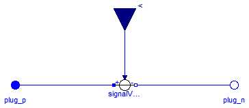
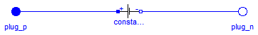
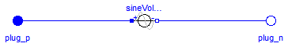
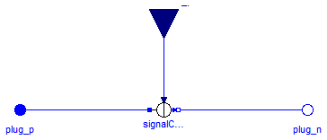
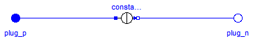
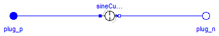

This package contains time-dependend and controlled multiphase voltage and current sources:
= pi/m= pi/mExtends from Modelica.Icons.SourcesPackage (Icon for packages containing sources).
| Name | Description |
|---|---|
| Multiphase signal voltage source | |
| ConstantVoltage | Multiphase constant voltage source |
| SineVoltage | Multiphase sine voltage source |
| Multiphase sine current source | |
| ConstantCurrent | Multiphase constant current source |
| SineCurrent | Multiphase sine current source |

Contains m signal controlled voltage sources (Modelica.Electrical.Analog.Sources.SignalVoltage)
| Type | Name | Default | Description |
|---|---|---|---|
| Integer | m | 3 | Number of phases |
| Type | Name | Description |
|---|---|---|
| PositivePlug | plug_p | |
| NegativePlug | plug_n | |
| input RealInput | v[m] | Voltage between pin p and n (= p.v - n.v) as input signal |
model SignalVoltage "Multiphase signal voltage source"
parameter Integer m(min=1) = 3 "Number of phases";
Modelica.SIunits.Current i[m] = plug_p.pin.i
"Currents flowing into positive plugs";
Interfaces.PositivePlug plug_p(final m=m);
Interfaces.NegativePlug plug_n(final m=m);
Modelica.Blocks.Interfaces.RealInput v[m]
"Voltage between pin p and n (= p.v - n.v) as input signal";
Modelica.Electrical.Analog.Sources.SignalVoltage signalVoltage[m];
equation
connect(signalVoltage.p, plug_p.pin);
connect(signalVoltage.n, plug_n.pin);
connect(v, signalVoltage.v);
end SignalVoltage;

Contains m constant voltage sources (Modelica.Electrical.Analog.Sources.ConstantVoltage)
Extends from Interfaces.TwoPlug (Component with one m-phase electric port).
| Type | Name | Default | Description |
|---|---|---|---|
| Integer | m | 3 | Number of phases |
| Voltage | V[m] | Value of constant voltage [V] |
| Type | Name | Description |
|---|---|---|
| PositivePlug | plug_p | |
| NegativePlug | plug_n |
model ConstantVoltage "Multiphase constant voltage source"
extends Interfaces.TwoPlug;
parameter Modelica.SIunits.Voltage V[m](start=fill(1, m))
"Value of constant voltage";
Modelica.Electrical.Analog.Sources.ConstantVoltage constantVoltage[m](
final V=V);
equation
connect(constantVoltage.p, plug_p.pin);
connect(constantVoltage.n, plug_n.pin);
end ConstantVoltage;

Contains m sine voltage sources (Modelica.Electrical.Analog.Sources.SineVoltage) with a default phase shift of -(j-1)/m * 2*pi for j in 1:m.
Extends from Interfaces.TwoPlug (Component with one m-phase electric port).
| Type | Name | Default | Description |
|---|---|---|---|
| Integer | m | 3 | Number of phases |
| Voltage | V[m] | Amplitudes of sine waves [V] | |
| Angle | phase[m] | -{(j - 1)/m*2*Modelica.Const... | Phases of sine waves [rad] |
| Frequency | freqHz[m] | Frequencies of sine waves [Hz] | |
| Voltage | offset[m] | zeros(m) | Voltage offsets [V] |
| Time | startTime[m] | zeros(m) | Time offsets [s] |
| Type | Name | Description |
|---|---|---|
| PositivePlug | plug_p | |
| NegativePlug | plug_n |
model SineVoltage "Multiphase sine voltage source"
extends Interfaces.TwoPlug;
parameter Modelica.SIunits.Voltage V[m](start=fill(1, m))
"Amplitudes of sine waves";
parameter Modelica.SIunits.Angle phase[m]=-{(j - 1)/m*2*Modelica.
Constants.pi for j in 1:m} "Phases of sine waves";
parameter Modelica.SIunits.Frequency freqHz[m](start=fill(1, m))
"Frequencies of sine waves";
parameter Modelica.SIunits.Voltage offset[m]=zeros(m) "Voltage offsets";
parameter Modelica.SIunits.Time startTime[m]=zeros(m) "Time offsets";
Modelica.Electrical.Analog.Sources.SineVoltage sineVoltage[m](
final V=V,
final phase=phase,
final freqHz=freqHz,
final offset=offset,
final startTime=startTime);
equation
connect(sineVoltage.p, plug_p.pin);
connect(sineVoltage.n, plug_n.pin);
end SineVoltage;

Contains m signal controlled current sources (Modelica.Electrical.Analog.Sources.SignalCurrent)
| Type | Name | Default | Description |
|---|---|---|---|
| Integer | m | 3 | Number of phases |
| Type | Name | Description |
|---|---|---|
| PositivePlug | plug_p | |
| NegativePlug | plug_n | |
| input RealInput | i[m] | Current flowing from pin p to pin n as input signal |
model SignalCurrent "Multiphase sine current source"
parameter Integer m(min=1) = 3 "Number of phases";
Modelica.SIunits.Voltage v[m] = plug_p.pin.v - plug_n.pin.v
"Voltage drops between the two plugs";
Interfaces.PositivePlug plug_p(final m=m);
Interfaces.NegativePlug plug_n(final m=m);
Modelica.Blocks.Interfaces.RealInput i[m]
"Current flowing from pin p to pin n as input signal";
Modelica.Electrical.Analog.Sources.SignalCurrent signalCurrent[m];
equation
connect(signalCurrent.p, plug_p.pin);
connect(signalCurrent.n, plug_n.pin);
connect(i, signalCurrent.i);
end SignalCurrent;
 Modelica.Electrical.MultiPhase.Sources.ConstantCurrent
Modelica.Electrical.MultiPhase.Sources.ConstantCurrent
Contains m constant current sources (Modelica.Electrical.Analog.Sources.ConstantCurrent)
Extends from Interfaces.TwoPlug (Component with one m-phase electric port).
| Type | Name | Default | Description |
|---|---|---|---|
| Integer | m | 3 | Number of phases |
| Current | I[m] | Value of constant current [A] |
| Type | Name | Description |
|---|---|---|
| PositivePlug | plug_p | |
| NegativePlug | plug_n |
model ConstantCurrent "Multiphase constant current source"
extends Interfaces.TwoPlug;
parameter Modelica.SIunits.Current I[m](start=fill(1, m))
"Value of constant current";
Modelica.Electrical.Analog.Sources.ConstantCurrent constantCurrent[m](
final I=I);
equation
connect(constantCurrent.p, plug_p.pin);
connect(constantCurrent.n, plug_n.pin);
end ConstantCurrent;

Contains m sine current sources (Modelica.Electrical.Analog.Sources.SineCurrent) with a default phase shift of -(j-1)/m * 2*pi for j in 1:m.
Extends from Interfaces.TwoPlug (Component with one m-phase electric port).
| Type | Name | Default | Description |
|---|---|---|---|
| Integer | m | 3 | Number of phases |
| Current | I[m] | Amplitudes of sine waves [A] | |
| Angle | phase[m] | -{(j - 1)/m*2*Modelica.Const... | Phases of sine waves [rad] |
| Frequency | freqHz[m] | Frequencies of sine waves [Hz] | |
| Current | offset[m] | zeros(m) | Current offsets [A] |
| Time | startTime[m] | zeros(m) | Time offsets [s] |
| Type | Name | Description |
|---|---|---|
| PositivePlug | plug_p | |
| NegativePlug | plug_n |
model SineCurrent "Multiphase sine current source"
extends Interfaces.TwoPlug;
parameter Modelica.SIunits.Current I[m](start=fill(1, m))
"Amplitudes of sine waves";
parameter Modelica.SIunits.Angle phase[m]=-{(j - 1)/m*2*Modelica.
Constants.pi for j in 1:m} "Phases of sine waves";
parameter Modelica.SIunits.Frequency freqHz[m](start=fill(1, m))
"Frequencies of sine waves";
parameter Modelica.SIunits.Current offset[m]=zeros(m) "Current offsets";
parameter Modelica.SIunits.Time startTime[m]=zeros(m) "Time offsets";
Modelica.Electrical.Analog.Sources.SineCurrent sineCurrent[m](
final I=I,
final phase=phase,
final freqHz=freqHz,
final offset=offset,
final startTime=startTime);
equation
connect(sineCurrent.p, plug_p.pin);
connect(sineCurrent.n, plug_n.pin);
end SineCurrent;